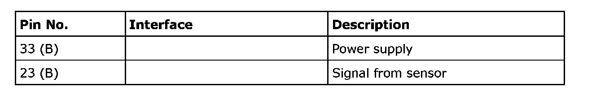
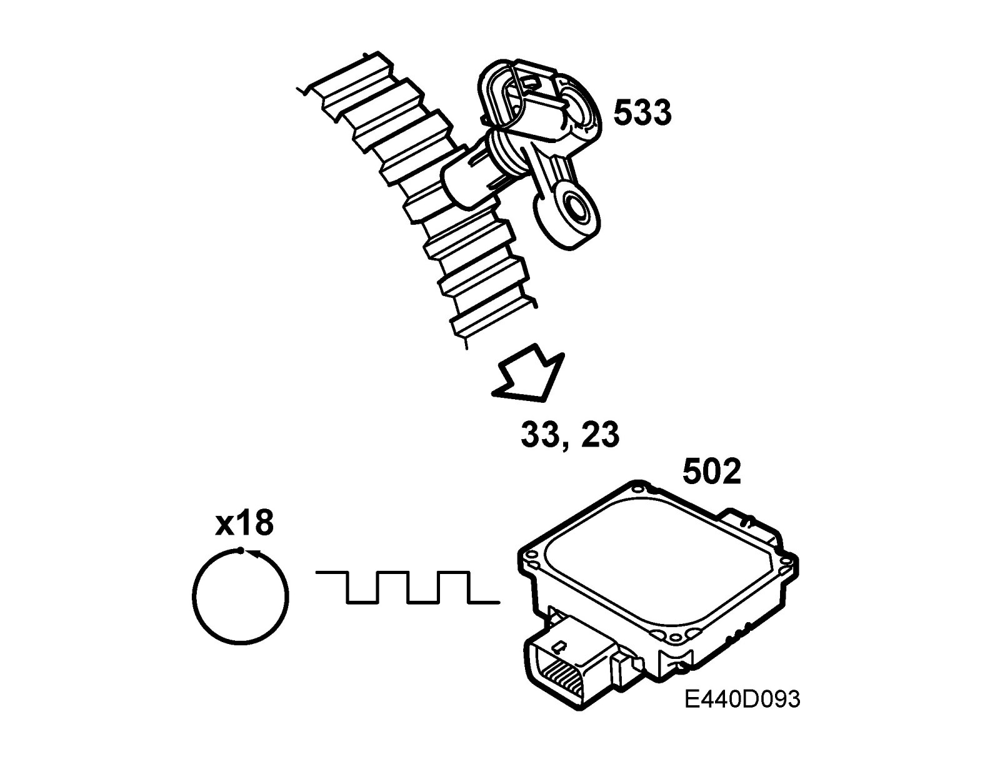
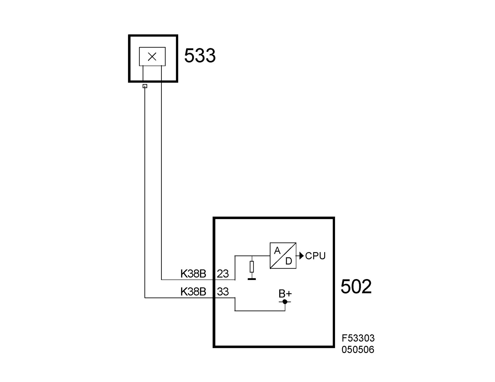

Transmission Speed Sensor: Description and Operation
Output shaft speed sensor, F40 manual gearbox (533)Location
Gearbox, output shaft speed sensor (533)
Main task
To measure the speed of the output shaft in the gearbox. This value is used by the TCM.

Type
Magnetoresistance, Hall effect. Uses a tooth wheel with 18 teeth for measurement.
Connection
The sensor is supplied with power from pin 33 (B) on the TCM and the signal from the sensor is received on pin 23 (B) on the TCM.


